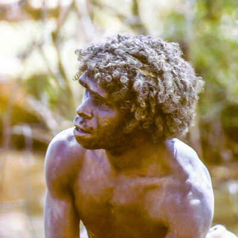

<!DOCTYPE html>
<html lang="en">
<head>
    <meta charset="UTF-8">
    <meta http-equiv="X-UA-Compatible" content="IE=edge">
    <meta name="viewport" content="width=device-width, initial-scale=1.0">
    <title>Leaflet Tutorial</title>
    <link rel="stylesheet" href="https://unpkg.com/leaflet@1.7.1/dist/leaflet.css" />
    <link rel="stylesheet" href="https://unpkg.com/leaflet-control-geocoder/dist/Control.Geocoder.css" />
    <style>
        #map{
            height: 100vh;
            width: 100%;
        }

        .info {
    padding: 6px 8px;
    font: 14px/16px Arial, Helvetica, sans-serif;
    background: white;
    background: rgba(255,255,255,0.8);
    box-shadow: 0 0 15px rgba(0,0,0,0.2);
    border-radius: 5px;
}
.info h4 {
    margin: 0 0 5px;
    color: #777;
}

.legend {
    line-height: 18px;
    color: #555;
}
.legend i {
    width: 18px;
    height: 18px;
    float: left;
    margin-right: 8px;
    opacity: 0.7;
}


    </style>

</head>
<body>
    <div id="map"></div>
</body>
</html>
<script src="https://unpkg.com/leaflet@1.7.1/dist/leaflet.js"></script>
<script src="./data/line.js"></script>
<script src="./data/point.js"></script>
<script src="./data/polygon.js"></script>
<script src="./data/nepaldata.js"></script>
<script src="https://unpkg.com/leaflet-control-geocoder/dist/Control.Geocoder.js"></script>
<script src="./data/usstates.js"></script>
<script>

    /*===================================================
                      OSM  LAYER               
===================================================*/

    var map = L.map('map').setView([3.6268, 36.0023], 4);
var osm = L.tileLayer('https://{s}.tile.openstreetmap.org/{z}/{x}/{y}.png', {
    attribution: '&copy; <a href="https://www.openstreetmap.org/copyright">OpenStreetMap</a> contributors'
});
osm.addTo(map);

/*===================================================
                      MARKER               
===================================================*/

var singleMarker = L.marker([4.140634273731052, 35.919390651530186],{
    title: "Nariokotome Discovery Site"
}).addTo(map).bindPopup('<h1>Nariokotome Discovery Site</h1> <p> The Turkana Boy, a Homo ergaster, was discovered here by Lake Turkana by Kamoya Kimeu</p> ');


/*===================================================
                     TILE LAYER               
===================================================*/

var CartoDB_DarkMatter = L.tileLayer('https://{s}.basemaps.cartocdn.com/dark_all/{z}/{x}/{y}{r}.png', {
attribution: '&copy; <a href="https://www.openstreetmap.org/copyright">OpenStreetMap</a> contributors &copy; <a href="https://carto.com/attributions">CARTO</a>',
subdomains: 'abcd',
    maxZoom: 19
});
CartoDB_DarkMatter.addTo(map);

 // Satelite Layer
googleSat = L.tileLayer('http://{s}.google.com/vt/lyrs=s&x={x}&y={y}&z={z}',{
   maxZoom: 20,
   subdomains:['mt0','mt1','mt2','mt3']
 });
googleSat.addTo(map);


/*===================================================
                      GEOJSON               
===================================================*/

var linedata = L.geoJSON(lineJSON).addTo(map);
var pointdata = L.geoJSON(pointJSON).addTo(map);
var nepalData = L.geoJSON(nepaldataa).addTo(map);
var polygondata = L.geoJSON(polygonJSON,{
    onEachFeature: function(feature,layer){
        layer.bindPopup('<b>This is a </b>' + feature.properties.name)
    },
    style:{
        fillColor: 'red',
        fillOpacity:1,
        color: 'green'
    }
}).addTo(map);

/*===================================================
                      LAYER CONTROL               
===================================================*/

var baseLayers = {
    "Satellite":googleSat,
    "Water Color":Stamen_Watercolor,
};

var overlays = {
    "Marker": singleMarker,
    "PointData":pointdata,
    "LineData":linedata,
    "PolygonData":polygondata
};

L.control.layers(baseLayers, overlays).addTo(map);


/*===================================================
                     SEARCH BUTTON               
===================================================*/

L.Control.geocoder().addTo(map);


</script>
                